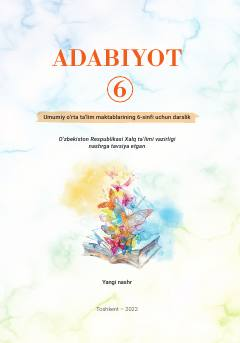

6A6-sinf o'quvchilari uchun mo'ljallangan adabiyot fani darsligi.
Mazkur darslik umumiy o'rta ta'lim maktablarining 6-sinf o'quvchilari uchun mo'ljallangan bo'lib, badiiy matnni tahlil qilish bosqichlari va o'zbek hamda jahon adabiyoti namunalarini o'z ichiga oladi. Kitobda o'quvchilarning adabiy savodxonligini oshirish va matn mazmunini chuqur tushunish ko'nikmalarini shakllantirishga alohida e'tibor qaratilgan.